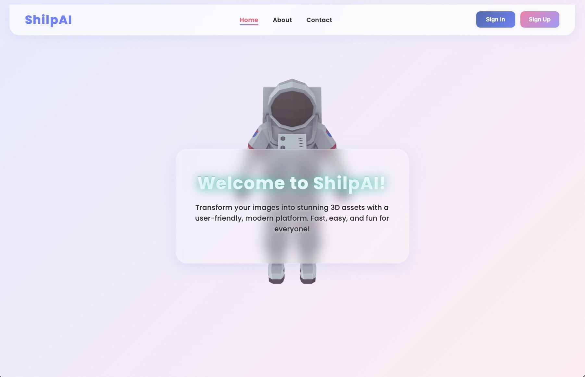
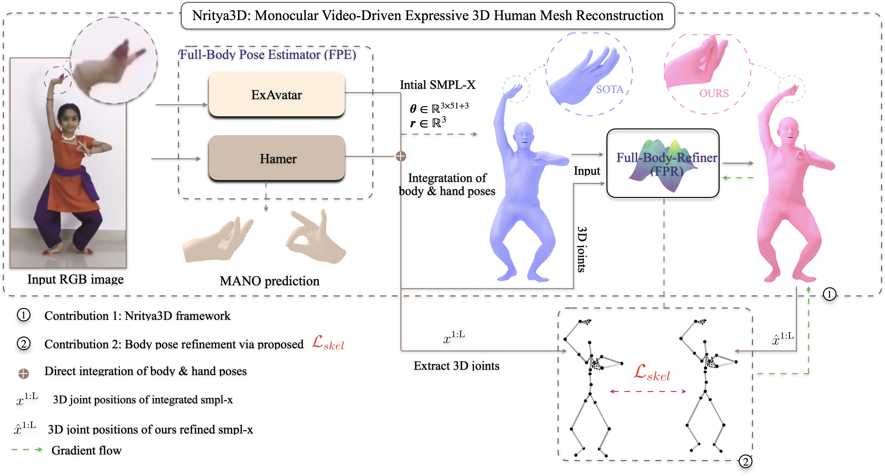
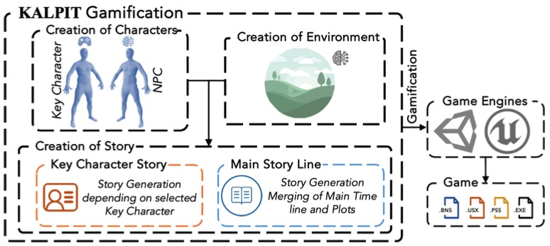
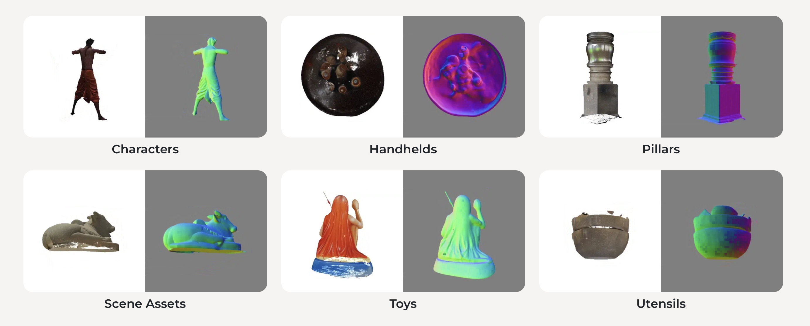

|
I am a software engineer and developer passionate about building high-performance web applications, exploring new technologies, and crafting elegant user experiences. Welcome to my portfolio! My work spans frontend development, backend systems, and mobile applications, with a focus on creating responsive, accessible, and user-centric software. I love turning complex problems into simple, beautiful, and intuitive designs. Currently, I am looking for exciting opportunities to collaborate on innovative projects, build scalable products, and learn from experienced engineers.
|
|
|
Technical Focus AreasMy main technical areas of focus include Frontend Development, Responsive Design, Single Page Applications (SPAs), and Web Optimization. I am also highly interested in Cloud Technologies, API Development, and Open Source Software. Featured Projects AI-Based Image-to-3D Generation 
4D Human Refinement  Expressive 3D Human Reconstruction  Digital Indian Ethos & Gamification  Interactive 3D Showcase
Recent Updates
Key Projects & Achievements
Projects & Portfolio
Web App
A high-performance web application built with modern standards, featuring a fluid responsive layout, custom theme engines, and robust state management.
Mobile App
An intuitive mobile productivity tool focused on seamless sync, offline capability, and accessibility integrations to help users organize their daily tasks.
Open Source
An open-source CLI bundle built in Node.js to streamline development bootstrapping, automate test executions, and manage deployment integrations. |
|